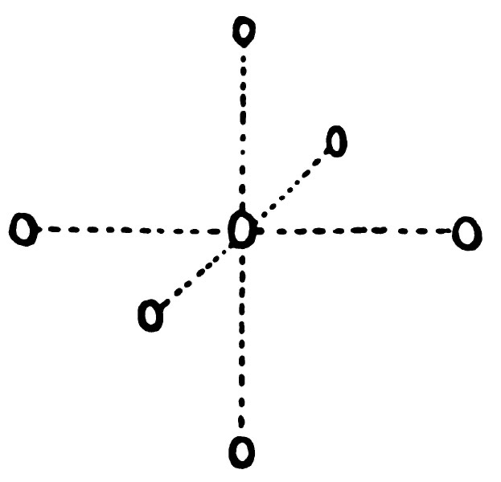

Jeffrey Asante
AI, Software Engineer & Data Scientist

About Me
I'm a software engineer and AI researcher with experience spanning data science, software engineering, and machine learning. I focus on creating practical, high-impact solutions.
My expertise includes:
- Developing innovative AI solutions and robust data systems
- Optimizing machine learning model performance and scalability
- Applying mathematical modeling and designing efficient data architectures
- Leading cross-functional teams and translating technical work into business value
Experience
Software Engineer (AI + ML)
Mobobi LLC
- Led the development of an advanced voice data processing system, achieving a 40% improvement in analysis speed through optimized algorithms and architecture.
- Developed specialized tools for efficient voice dataset generation, augmentation, and quality optimization, enhancing model training effectiveness.
- Successfully deployed lightweight, on-device Machine Learning models for real-time voice AI applications, focusing on low latency and resource efficiency.
Data Scientist
Freelancer
- Designed and implemented comprehensive data-gathering systems and automated reporting tools, effectively processing diverse datasets to deliver actionable business insights.
- Streamlined data lifecycle processes including compilation, cleaning, transformation, and visualization from multiple sources, improving overall data quality by 75%.
- Enhanced prediction accuracy by 80% through the application of advanced statistical techniques, rigorous validation of predictive models, and iterative refinement.
AI Developer
Zinary
- Significantly enhanced a core biometric identification system by integrating advanced OCR and computer vision techniques for document analysis and verification.
- Improved facial recognition model accuracy by 80% through fine-tuning, data augmentation, and implementation of state-of-the-art algorithms.
- Engineered the system architecture for robust multi-country compatibility, addressing variations in document types and regulatory requirements.
Projects
Show All on GitHubGRPO Maze Solver
github.com/jeffasante
Reinforcement Learning, Path Planning, Deep Learning

BFSMetal
github.com/jeffasante
GPU Computing, Graph Algorithms, Parallelism
Nimble
github.com/jeffasante
Deep Learning, Vector Graphics, Image Processing

MathExpr
github.com/jeffasante
Parsing, Compilers, Mathematical Computing

Ant Colony Simulation
github.com/jeffasante
Swarm Intelligence, RL, Simulation

CoreFace
coreface.vercel.app
Computer Vision, WebAssembly, Privacy
Skills
Artificial Intelligence
Programming Languages
Tools & Frameworks
- NumPy
- SciPy
- Pandas
- Matplotlib / Seaborn
- Scikit-learn
- JAX / Flax